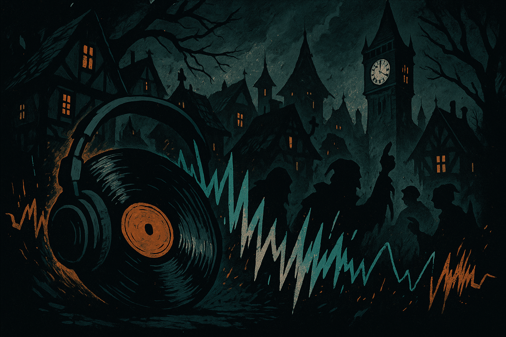

Blood on the Clocktower Playlist Countdown
Let’s set the stage: You’re in a candlelit room. Or maybe a backyard patio with tiki torches and half a dozen fire pits. Accusations start flying, and you're trying to decide if someone is defending themselves a little too hard. The Storyteller is nose deep in the Grimoire, the Recluse is staying suspiciously quiet, and someone definitely just lied about being the Chef.
Now imagine all of that, but with a killer soundtrack.
This playlist began as a group project— players submitting songs they felt captured the spirit of Blood on the Clocktower. Some choices are obvious. Some are brilliant. Some are... let’s call them “bold.” But that’s part of the charm: like the game itself, this playlist thrives on diversity, mystery, and just a hint of chaos.
The rankings, however? Those were handed off to an AI (as was this write-up). But not in the same lazy way you use AI to finish your school homework or that last-minute work deadline. No, this was far more needlessly complicated, wildly over-engineered, and (hopefully) entertaining.
The AI analyzed lyrics, vibe, and how well each track mirrored the themes of betrayal, paranoia, identity, and murder (the fun kind). It even ran the numbers in head-to-head matchups—yes, actual win rates were involved—to determine who rose to the top and who got executed on day two.
So whether you're a veteran Demon-hunter, a Townsfolk trying to stay alive, or just here for the vibes, settle in. Crank the volume. And get ready to argue with the rankings. Because if there’s one thing more divisive than a game of Clocktower... It's a playlist made by your friends, ranked by a robot—A robot who really loves em dashes.
Click here for the full rankings